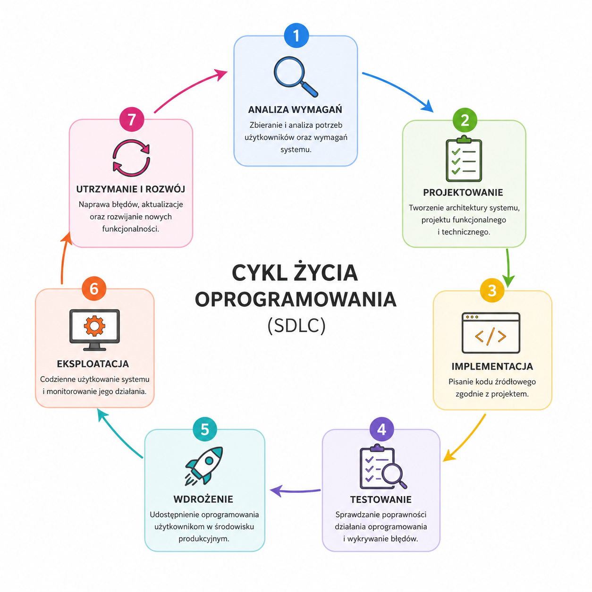

DevOps
DevOps integruje proces tworzenia, testowania oraz wdrażania aplikacji.
Cykl życia oprogramowania (Software Development Life Cycle - SDLC) to uporządkowany proces tworzenia, wdrażania oraz utrzymania systemów informatycznych. SDLC pozwala efektywnie zarządzać projektem programistycznym, kontrolować koszty oraz zwiększać jakość oprogramowania.

Zbieranie wymagań użytkowników i potrzeb biznesowych.
Opracowanie architektury i struktury systemu.
Programowanie modułów systemu zgodnie z projektem.
Weryfikacja poprawności działania systemu.
| Rodzaj testu | Opis |
|---|---|
| Jednostkowe | Testowanie pojedynczych funkcji |
| Integracyjne | Sprawdzenie współpracy modułów |
| Systemowe | Test całego systemu |
| Akceptacyjne | Potwierdzenie wymagań klienta |
Udostępnienie aplikacji użytkownikom i dalszy rozwój systemu.
Model kaskadowy to jeden z najstarszych i najbardziej klasycznych modeli cyklu życia oprogramowania. Proces tworzenia systemu przebiega w nim liniowo i sekwencyjnie — każdy etap musi zostać zakończony przed rozpoczęciem kolejnego (nazwa "kaskadowy" pochodzi od sposobu przepływu pracy przypominającego spływającą wodę w wodospadzie — przejście następuje tylko w jednym kierunku0.
W modelu tym projekt podzielony jest na wyraźne etapy:
Model iteracyjny to model cyklu życia oprogramowania, w którym system tworzony jest stopniowo poprzez kolejne iteracje, czyli powtarzające się cykle projektowania, implementacji i testowania.
W przeciwieństwie do modelu kaskadowego, cały system nie musi być ukończony jednorazowo. Produkt rozwijany jest etapami — każda iteracja dostarcza nową wersję aplikacji zawierającą dodatkowe funkcjonalności.
Model iteracyjny opiera się na:
Każda iteracja przechodzi przez pełny mini-cykl SDLC:
Agile to zwinne podejście do tworzenia oprogramowania, które opiera się na iteracyjnym i przyrostowym rozwijaniu systemu oraz ścisłej współpracy zespołu z klientem. Głównym celem Agile jest szybkie dostarczanie wartościowego oprogramowania oraz elastyczne reagowanie na zmieniające się wymagania - nie jest to pojedyncza metoda programowania, lecz filozofia zarządzania projektami i organizacji pracy zespołu.
Główne założenia Agile:
DevOps integruje proces tworzenia, testowania oraz wdrażania aplikacji.
Cykl życia oprogramowania jest podstawowym działaniem wykorzystywanym podczas tworzenia nowoczesnych systemów informatycznych. Dzięki planowaniu i realizacji poszczególnych etapów możliwe jest tworzenie stabilnych, bezpiecznych i wydajnych aplikacji.